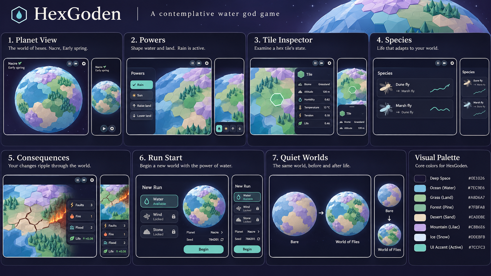

HexGoden mockups
Seven static screens for a zen low-poly water god game. Each screen adapts from phone to desktop.

Reference board: the initial direction, corrected in these screens.
Seven static screens for a zen low-poly water god game. Each screen adapts from phone to desktop.

Reference board: the initial direction, corrected in these screens.